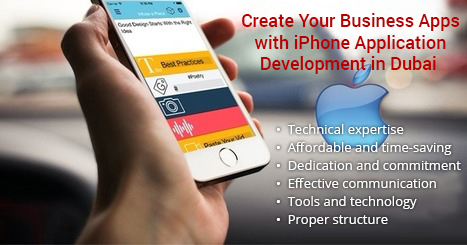

<?xml version="1.0" encoding="UTF-8"?><rss version="2.0"
	xmlns:content="http://purl.org/rss/1.0/modules/content/"
	xmlns:wfw="http://wellformedweb.org/CommentAPI/"
	xmlns:dc="http://purl.org/dc/elements/1.1/"
	xmlns:atom="http://www.w3.org/2005/Atom"
	xmlns:sy="http://purl.org/rss/1.0/modules/syndication/"
	xmlns:slash="http://purl.org/rss/1.0/modules/slash/"
	>

<channel>
	<title>iPhone application development in Dubai &#8211; Blog</title>
	<atom:link href="https://www.ehorizon.ae/blog/tag/iphone-application-development-in-dubai/feed/" rel="self" type="application/rss+xml" />
	<link>https://www.ehorizon.ae/blog</link>
	<description></description>
	<lastBuildDate>Thu, 01 Mar 2018 05:29:32 +0000</lastBuildDate>
	<language>en-US</language>
	<sy:updatePeriod>hourly</sy:updatePeriod>
	<sy:updateFrequency>1</sy:updateFrequency>
	<generator>https://wordpress.org/?v=4.4.15</generator>
	<item>
		<title>The benefits of iPhone Application Development in Dubai</title>
		<link>https://www.ehorizon.ae/blog/2017/10/10/benefits-iphone-application-development-dubai/</link>
		<comments>https://www.ehorizon.ae/blog/2017/10/10/benefits-iphone-application-development-dubai/#respond</comments>
		<pubDate>Tue, 10 Oct 2017 05:45:57 +0000</pubDate>
		<dc:creator><![CDATA[eHorizon]]></dc:creator>
				<category><![CDATA[iPhone Application Development]]></category>
		<category><![CDATA[iPhone application development in Dubai]]></category>

		<guid isPermaLink="false">https://www.ehorizon.ae/blog/?p=222</guid>
		<description><![CDATA[<p>The rapid growth in technology has led to a widespread development of iPhone application. This has much to do with the remarkable benefits it provides to business individuals who strive hard for success in their respective areas. The possibility of using a palm-sized Smartphone to connect to anyone in the world at the touch of [&#8230;]</p>
<p>The post <a rel="nofollow" href="../../../2017/10/10/benefits-iphone-application-development-dubai/index.html">The benefits of iPhone Application Development in Dubai</a> appeared first on <a rel="nofollow" href="../../../index.html">Blog</a>.</p>
]]></description>
				<content:encoded><![CDATA[<p style="text-align: justify;">The rapid growth in technology has led to a widespread development of iPhone application. This has much to do with the remarkable benefits it provides to business individuals who strive hard for success in their respective areas. The possibility of using a palm-sized Smartphone to connect to anyone in the world at the touch of a finger has added to its popularity. Now owning a Smartphone is considered to be the ultimate status symbol for a person in this modern world. And it adds class and style statement if the Smartphone is an iPhone. Thus for businesses that plan to get an app for their online presence, it would be of immense help to develop from companies that are involved in iPhone application development in Dubai or elsewhere.</p>
<p style="text-align: justify;"><strong>Growing Business with iPhone Application </strong></p>
<p style="text-align: justify;">In addition to making and receiving a call, Smartphone is mostly used to access the Internet. Hence, if the need is to shop online or make some financial dealings, one makes use of Smartphone.  iPhone is now the most popular Smartphone in the market, with business and professional people owning the device the most. Thus for those businesses having an online presence, make sure to make it responsive on an iOS device, which means the website is compatible with iOS platform and devices.</p>
<p style="text-align: justify;"><span id="more-222"></span></p>
<p style="text-align: justify;">Any business website that fails to run on an iOS device is likely to lose revenue. Hence, owners of these websites need to ensure that their business website is developed by making it compatible with iPhone and help the business grow. There are a good number of services for iPhone application development in Dubai and elsewhere available for app development as per your business needs at low costs. Hence, it goes without saying that iPhone application development plays a big role in increasing the revenues. The below-mentioned perspective proves this fact.</p>
<p>&nbsp;</p>
<p style="text-align: justify;"><strong>Popularity</strong></p>
<p style="text-align: justify;">The increasing sales of iPhone prove beyond doubt that Apple’s Smartphone is the most popular these days. The utility of the device has also increased with an increase in the number of features. The growing popularity of iPhone has made it important for making a website compatible with iPhone so that a greater section of people can get access to their business website. This is sure to bring in an enormous growth in revenue.</p>
<p style="text-align: justify;"><strong>Multiple Apps</strong></p>
<p style="text-align: justify;">One will come across a wide array of iPhone apps in the App Store. Developing an iPhone app as per the business services or products could be a great way for growth. Developing a website such that a maximum number of users could avail better navigation and make use of the benefits will certainly boost the business growth to a higher level.</p>
<p style="text-align: justify;"><strong>Higher Return on Investment</strong></p>
<p style="text-align: justify;">When looking for a company involved in iPhone application development in Dubai or elsewhere, looks for reliable firms like eHorizon, with a team of iOS application developers, who could develop professional apps or iPhone compatible websites. If the app is developed in the proper format, you can expect your app to be among the top choices in the market. So instead of dilly-dallying in making a decision, hire the services of eHorizon, the company for iPhone application development in Dubai.</p>
<p style="text-align: justify;">It is after the launch of iPhone 5 and iOS 6 mobile, Apple reported of the manifold growth in popularity of iPhone. iPhone offers a platform to help developers in developing unique and innovative applications. Some of the important reasons that make developing application on iPhone platform for your business the right choice are given below:</p>
<p style="text-align: justify;">There are different brands of Smartphone available in the market, with iPhone leading all. Statistics show that over 6 million of iPhone handsets have been sold till now and the figures are only increasing. Hence, <a href="../../../../iphone-application-development-services.html" target="_blank">iPhone application development provides</a> a huge opportunity to bring your products or services to the millions of users across the world.</p>
<p style="text-align: justify;">One can download iPhone SDK and use it to develop and market iPhone app on the Apple App Store. All the required tools for developing iPhone application are available in the iPhone SDK.</p>
<p style="text-align: justify;">A good number of companies exist that provide iPhone application development services with thousands of applications on their credit. You could select the services from one of these companies and build your own application.</p>
<p style="text-align: justify;">iPhone applications are used for various reasons like entertainment, fun, business purposes, among others. It is having an iPhone, which is now an integral part in the life of a person.</p>
<p style="text-align: justify;">Although a good number of benefits are available from using iPhone application, some restrictions have been put by Apple for developing an application. Some of these restrictions are given below:</p>
<p style="text-align: justify;"><strong>Restrictions on iPhone applications</strong></p>
<p style="text-align: justify;">The biggest restriction is that two applications cannot be run by the user at the same time in spite of their importance. For instance, if one application is running and there is a need to use the other application to complete the work, the first application should be closed before moving on to the next application.</p>
<p style="text-align: justify;">Another restriction is that you cannot run third-party applications in iPhone in the background.</p>
<p style="text-align: justify;">There are instances of issues related to iOS compatibility. Hence, if an iOS 6 application is developed, you need to include scripts in the application to make it compatible with the previous versions.</p>
<p style="text-align: justify;">To wrap it up, although these limitations could sometimes turn out to be frustrating, these have not significant effect on the sale of iPhone. This is amply proved from the statistics that prove that iPhone still remains as the leading Smartphone in the market and holds over 30% of the Smartphone market share. That iPhone is the most popular Smartphone in the world is proved by the fact that over 7, 00,000 iPhone applications are available on the World Wide Web. And the huge benefits that the user finds with iPhone applications is simply enough to overpower the limitations of the applications.</p>
<p>The post <a rel="nofollow" href="../../../2017/10/10/benefits-iphone-application-development-dubai/index.html">The benefits of iPhone Application Development in Dubai</a> appeared first on <a rel="nofollow" href="../../../index.html">Blog</a>.</p>
]]></content:encoded>
			<wfw:commentRss>https://www.ehorizon.ae/blog/2017/10/10/benefits-iphone-application-development-dubai/feed/</wfw:commentRss>
		<slash:comments>0</slash:comments>
		</item>
		<item>
		<title>Benefits of iPhone Application Development in Dubai</title>
		<link>https://www.ehorizon.ae/blog/2017/07/07/benefits-of-iphone-application-development-in-dubai/</link>
		<comments>https://www.ehorizon.ae/blog/2017/07/07/benefits-of-iphone-application-development-in-dubai/#respond</comments>
		<pubDate>Fri, 07 Jul 2017 13:06:33 +0000</pubDate>
		<dc:creator><![CDATA[eHorizon]]></dc:creator>
				<category><![CDATA[iPhone Application Development]]></category>
		<category><![CDATA[iPhone application development in Dubai]]></category>

		<guid isPermaLink="false">https://www.ehorizon.ae/blog/?p=204</guid>
		<description><![CDATA[<p>Since the launch of iOS6 and iPhone5, there has been a sharp rise in the popularity of iPhone. The users of iPhone4s are upgrading their software to iOS6. This is to be believed given the fact that there are over 200 new features available in the iOS6. Due to the huge popularity of iPhone, many [&#8230;]</p>
<p>The post <a rel="nofollow" href="../../../2017/07/07/benefits-of-iphone-application-development-in-dubai/index.html">Benefits of iPhone Application Development in Dubai</a> appeared first on <a rel="nofollow" href="../../../index.html">Blog</a>.</p>
]]></description>
				<content:encoded><![CDATA[<p style="text-align: justify;">Since the launch of iOS6 and iPhone5, there has been a sharp rise in the popularity of iPhone. The users of iPhone4s are upgrading their software to iOS6. This is to be believed given the fact that there are over 200 new features available in the iOS6. Due to the huge popularity of iPhone, many developers and programmers have come up with thousands of applications that made the handset more practical and useful for those using it.</p>
<p style="text-align: justify;">For those having an idea of an application would find selecting the iPhone platform the right choice. Here are some reasons that support your choice.</p>
<p style="text-align: justify;"></p>
<p style="text-align: justify;"><strong>What makes iPhone popular for your application idea?</strong></p>
<ul style="text-align: justify;">
<li>Among the different brands of Smartphone available in the market, it is the iPhone that tops the list.</li>
<li>Approximately 6 million sets of iPhone have been sold till now, and the sale is seeing no sign of slowing down. iPhone provides a tremendous opportunity to market your application idea to millions of users worldwide.</li>
<li>One can download SDK of iPhone, create applications accordingly and upload for distribution on the Apple App Store. This kit contains the various tools that are required for developing iPhone application. A good number of companies for iPhone application development in Dubai have been working in developing and marketing applications for iPhone, and these companies are available for hiring in developing your idea into iPhone application.</li>
<li>The huge popularity of iPhone applications: Users of iPhone find using applications developed for iPhone quite helpful and easy to perform numerous tasks, funny activities, etc. with their handsets. It goes without saying that iPhone is not just a Smartphone, but a part of life for the user.</li>
</ul>
<p style="text-align: justify;">These are some of the important benefits of developing applications on iPhone platform. However, Apple has implemented some restrictions on development of applications and running them on Apple device. Some of the restrictions that should be considered when planning to work for iPhone applications are given below.</p>
<p style="text-align: justify;"><strong>iPhone applications &#8211; Restrictions and limitations </strong></p>
<p style="text-align: justify;">Apple has introduced a major restriction to users of iPhone in not letting two applications to run at the same time, even if both the applications are important. Hence, if one is working with one application, and there is a need for another application to perform simultaneously, then the first application need to be closed before moving to the other application. This could be quite frustrating at times, more so when say, one is checking the email or browsing the internet, and there is a need to call someone, in which case, you will be disconnected from the server once you start making the call. Later on, after the call is finished, you will be required to sign in again.</p>
<p style="text-align: justify;">Another limitation in using iPhone is that it is not possible to run a third party application. Hence when chatting with someone in an application you receive a call, you will find getting disconnected from the chat window as you take the call, while the other party in chatting will find you offline.</p>
<p style="text-align: justify;">There could be compatibility issues with the iOS version. Hence, if an application is developed for the iOS6, the developer has to put some extra effort in development to make the application compatible with the previous versions and help it run properly in the different versions. Although there is no such incident of this type of issue happening, this could pose a problem for developers and programmers.</p>
<p style="text-align: justify;">In spite of these limitations that are at times frustrating, it should be noted that the sale of iPhone or its popularity has not waned in any way over the years. iPhone still remains the market leader in smartphone sales, holding about 30% of the market. Presently, the number of iPhone applications that are found on the internet is over 700,000. It clearly proves that the benefits and popularity of iPhone applications overcome the limitations and restrictions by Apple that are in place.</p>
<p style="text-align: justify;"><strong>Games</strong></p>
<p style="text-align: justify;">The most popular iPhone application development and possibly, the most challenging are developing iPhone games. It needs mentioning here that the cost of developing a game is always more than that of other apps, because to develop, the best and competent developers are hired to work towards coding for the games. Even to code the simplest game, the coding required is complex and dynamic, and is done in the backend.  There are different options available in playing a game, including maintaining the scores, making and integration with an online community, etc. Hence implementing the options could turn out to be quite complicated, as the different moves in a game need sounds, and other features. It is only the well-established development companies that are involved in developing iPhone games as a huge capital investment is involved.</p>
<p style="text-align: justify;"><strong>Conclusion</strong></p>
<p style="text-align: justify;">The decision in the type of iPhone application that you have in mind to develop finally depends on your overall budget. If you are new in the business of iPhone application development and trying your luck, then it makes sense to take into account all the aspects before setting about the project. A good number of trustworthy and reputable companies for <strong><a href="../../../../iphone-application-development-services.html" target="_blank">iPhone application development in Dubai</a></strong> like eHorizon offer design and development services along with consultancy services. Once hired, these companies assign a team of professionals that work closely with you, as they discuss and plan accordingly to make your mobile application a success. They lay out the numerous technological options that they would use to code for the application, and also perform a dummy run to ensure the correct working of the application.</p>
<p>The post <a rel="nofollow" href="../../../2017/07/07/benefits-of-iphone-application-development-in-dubai/index.html">Benefits of iPhone Application Development in Dubai</a> appeared first on <a rel="nofollow" href="../../../index.html">Blog</a>.</p>
]]></content:encoded>
			<wfw:commentRss>https://www.ehorizon.ae/blog/2017/07/07/benefits-of-iphone-application-development-in-dubai/feed/</wfw:commentRss>
		<slash:comments>0</slash:comments>
		</item>
		<item>
		<title>Create Your Business Apps with iPhone Application Development in Dubai</title>
		<link>https://www.ehorizon.ae/blog/2016/10/25/create-your-business-apps-with-iphone-application-development-in-dubai/</link>
		<comments>https://www.ehorizon.ae/blog/2016/10/25/create-your-business-apps-with-iphone-application-development-in-dubai/#respond</comments>
		<pubDate>Tue, 25 Oct 2016 09:33:55 +0000</pubDate>
		<dc:creator><![CDATA[eHorizon]]></dc:creator>
				<category><![CDATA[iPhone Application Development]]></category>
		<category><![CDATA[iPhone application development in Dubai]]></category>

		<guid isPermaLink="false">https://www.ehorizon.ae/blog/?p=144</guid>
		<description><![CDATA[<p>Due to the massive market share of iPhone apps, business owners have started looking up to creating enterprise-level business iPhone applications for their target markets. The growing demand and necessity of iPhone application development in Dubai and around the world have led to various service providers create brilliant iPhone applications for various small and large [&#8230;]</p>
<p>The post <a rel="nofollow" href="../../../2016/10/25/create-your-business-apps-with-iphone-application-development-in-dubai/index.html">Create Your Business Apps with iPhone Application Development in Dubai</a> appeared first on <a rel="nofollow" href="../../../index.html">Blog</a>.</p>
]]></description>
				<content:encoded><![CDATA[<p style="text-align: justify;">Due to the massive market share of iPhone apps, business owners have started looking up to creating enterprise-level business iPhone applications for their target markets. The growing demand and necessity of iPhone application development in Dubai and around the world have led to various service providers create brilliant iPhone applications for various small and large businesses. Be it a start-up or a large-scale enterprise, an interactive iPhone application can definitely do wonders for your business.</p>
<p style="text-align: justify;">Services for iPhone application development in Dubai focus on rigorous branding and online reputation building efforts for your business on the web. Also, iPhone apps can help extend your business’ reach to a larger section of customers, thus expanding your target audience and improving the reach of your products and services on a large scale. More and more businesses have begun outsourcing services and solutions for iPhone application development in Dubai and elsewhere to stay ahead in the competition and to target one of the biggest markets in the world.</p>
<p style="text-align: justify;">Your business can receive cutting-edge services from various companies dealing with <a href="../../../../iphone-application-development-services.html" target="_blank"><strong>iPhone application development in Dubai</strong></a>. It allows business owners to not just focus on local markets but also expand their reach across boundaries and territorial limits. In a similar manner, iPhone application development can offer a large number of advantages to businesses. No matter where your business is located, you can limitlessly extend your reach to a larger number of customers through well-developed and engaging iPhone apps.</p>
<p style="text-align: justify;"></p>
<p style="text-align: justify;"><strong>Here are some of the reasons why you should hire professional company for iPhone application development in Dubai and how their services can be fruitful for your business in the long run:</strong></p>
<p style="text-align: justify;"><strong>Technical expertise</strong></p>
<p style="text-align: justify;">Vast technical knowledge is required to create robust iPhone apps for your business. Although with the usage of Software Development Kit (SDK), creating mobile applications for iPhone devices has become comparatively easy and quick, a certain amount of technical knowledge is necessary to create unique and distinct mobile applications for your business to create a niche in your markets. Companies equipped with a team of expert developers have the skills and training developed over the years to build impactful applications that can make your business stand out from the rest.</p>
<p style="text-align: justify;"><strong>Affordable and time-saving</strong></p>
<p style="text-align: justify;">Hiring professional iPhone application development services has become quite cost-effective due to its huge demand and massive popularity. Professionals can get your work done in the quickest time possible with minimal errors and problems. Experts can save your business a lot of time and costs by creating mobile apps that can help you with effective marketing strategies, and also make it easier to get your products and services across to your target markets.</p>
<p style="text-align: justify;"><strong>Dedication and commitment</strong></p>
<p style="text-align: justify;">Reputed iPhone application development companies are recognized for their work solely for the dedication and hard work that they put in to deliver the best projects to clients. When you hire services from established companies, you can be assured that your project will be delivered on time with the highest quality standards, only because professionals here work with an utmost commitment to creating the best iPhone apps matching industry standards without compromising on quality.</p>
<p style="text-align: justify;"><strong>Effective communication</strong></p>
<p style="text-align: justify;">As a business owner, you are always kept involved in the project even after you have handed over your iPhone app development project to the company. A proper and effective communication system is followed by iPhone app development companies in order to produce the highest quality results with minimal errors and wastage of time, effort, and money. Their communication system ensures that you are aware of everything that they are doing by constantly staying in touch with you over emails and phone calls regularly.</p>
<p style="text-align: justify;"><strong>Tools and technology</strong></p>
<p style="text-align: justify;">One of the most important reasons that you should hire professional services is primarily because they have the necessary tools and work with the latest technologies to create the best iPhone apps for businesses. Proficient iOS app developers have intensive training and knowledge when it comes to using advanced technologies in just the right way to deliver the best results to clients and to create engaging and creative iPhone mobile apps.</p>
<p style="text-align: justify;"><strong>Proper structure</strong></p>
<p style="text-align: justify;">The methodology followed by professional companies is one thing that forms the strongest base of their working process. An integrated working structure with a detailed step by step process ensures that their experts do not go at fault with creating iPhone apps for your business. Also, it minimizes the chances of errors and mistakes, thus, minimizing the need to review and make changes to the projects over and over again.</p>
<p style="text-align: justify;">The above are some of the reasons why your business must look to hiring professional companies for iPhone application development in Dubai. Experts and proficient app developers can provide your business with much more just by creating the ideal iPhone app that truly reflects your business’ image and reputation. Also, you can create a superior brand status by getting the best iPhone apps created by professional developers at the most reasonable prices.</p>
<p>The post <a rel="nofollow" href="../../../2016/10/25/create-your-business-apps-with-iphone-application-development-in-dubai/index.html">Create Your Business Apps with iPhone Application Development in Dubai</a> appeared first on <a rel="nofollow" href="../../../index.html">Blog</a>.</p>
]]></content:encoded>
			<wfw:commentRss>https://www.ehorizon.ae/blog/2016/10/25/create-your-business-apps-with-iphone-application-development-in-dubai/feed/</wfw:commentRss>
		<slash:comments>0</slash:comments>
		</item>
	</channel>
</rss>

<!-- Localized -->